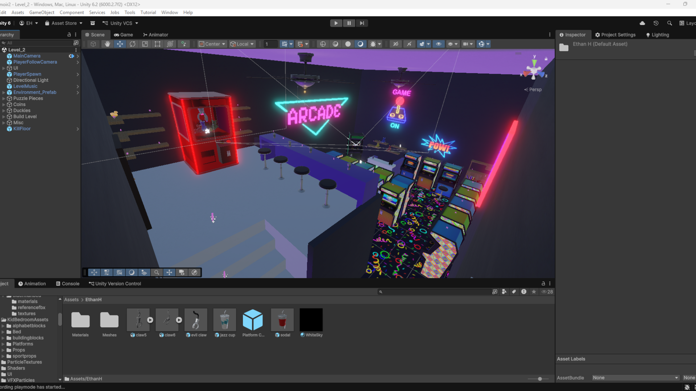
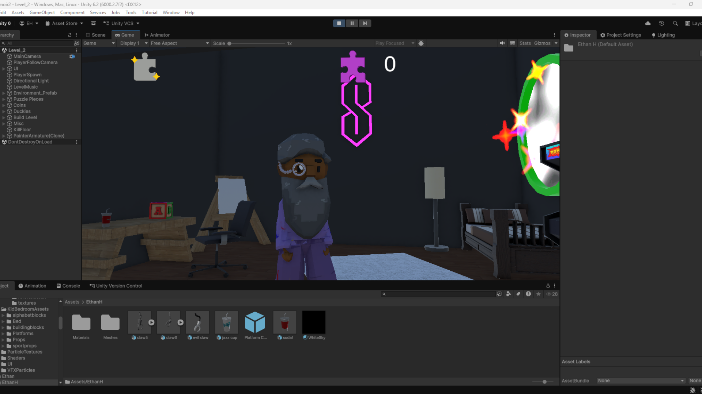
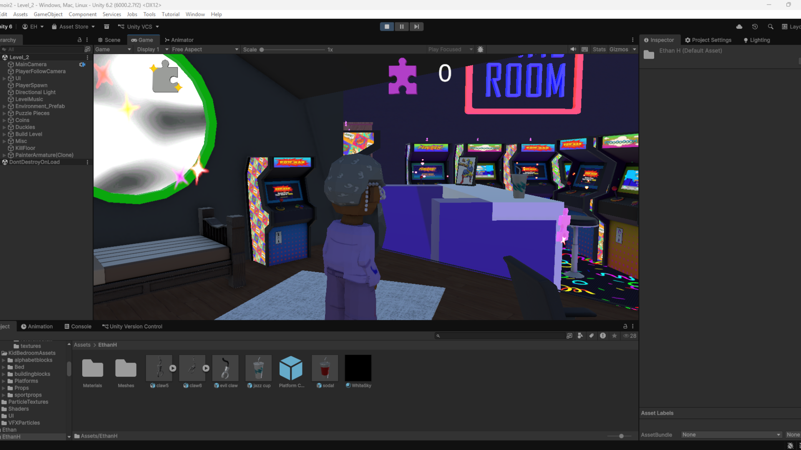
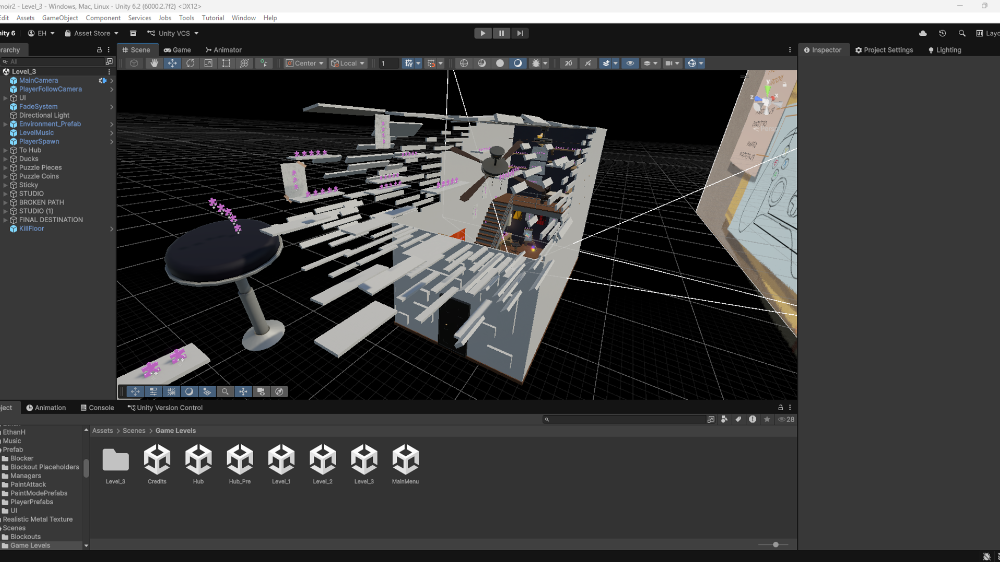
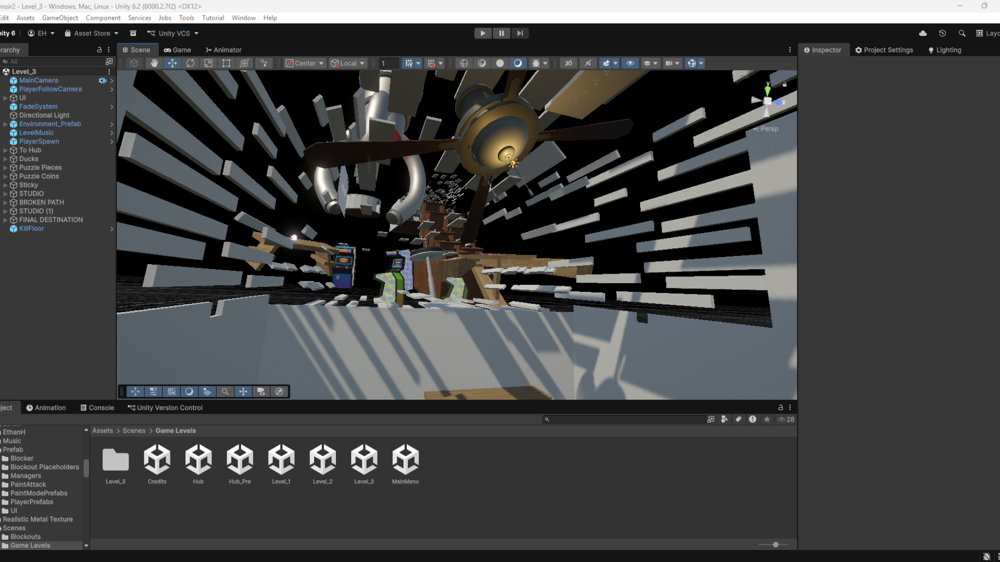
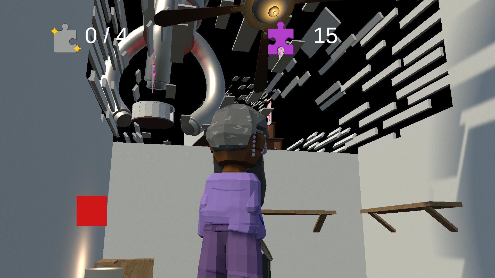
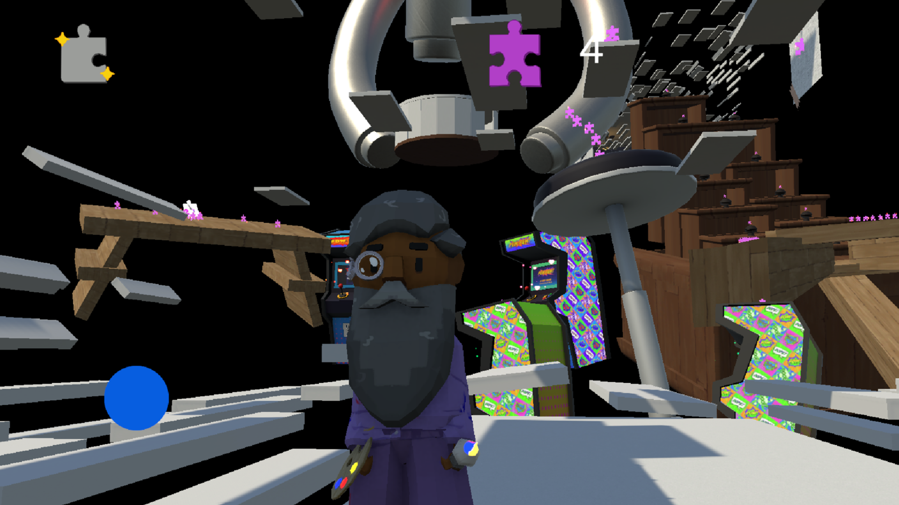

LEVEL DESIGN
Memoirs


I constructed the Whitebox for the Arcade level in MindMatters Studios' Memoirs, balancing realistic spatial layout with readable, platforming-friendly traversal.

I constructed the finalized version of the Arcade level, creating a sandbox for players to navigate with the freedom and creativity of using our platforming mechanics however they please to complete the level. Though there are intended critical paths, indicated by following the purple puzzle coins, each requiring different platforming mechanics to navigate, the player can approach them in whichever order and method they want to.


I rebuilt a to-scale, simplified version of our Hub level, where the player spawns when loading into the Arcade. When they turn around, they see that they are inside an Arcade machine within a giant Arcade. I really enjoyed playing with scale like this, adding to the sense that this is a part of the Painter's imagination. It also provides a cool transition betweeen levels without just plopping the Player in somewhere.


I iterated on my team's blockout for the finalized version of the Studio level in Memoirs, making the level feel more interconnected and that the Studio is being deconstructed and eaten into a Void, with objects freefloating in limbo. I also created the skybox for this level, creating an infinite void that is properly lit.


Above are some screenshots taken in game of the Studio level.